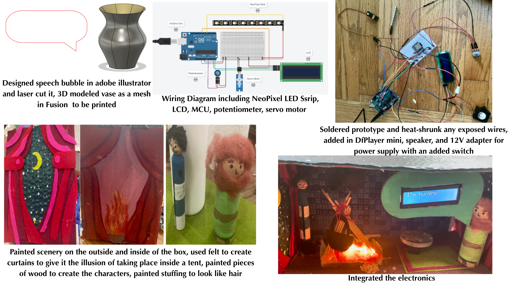

Annie Katz's Engineering Portfolio
I design assistive healthcare devices inspired by real needs experienced by my family, classmates, and myself. I independently lead engineering projects that integrate sensors, embedded systems, and hardware to support rehabilitation, diagnostics, and sensory health.
Role: Lead Engineer (Independent Project)
1) Problem / Motivation: Gut motility refers to the muscle contractions that move food through the digestive tract, and disorders in this process affect more than 20% of the population and account for over 40% of patients in gastroenterology clinics Current diagnostic tools require invasive procedures, are expensive, and cannot perform continuous at-home monitoring. The current market lacks wearable systems that integrate acoustic and thermal sensing to monitor gut activity, even though irregular gut rhythms are linked to digestive disease and disrupted circadian timing.
2) What I Built: A low-cost, reusable wearable device that monitors gut activity and circadian patterns overnight using acoustic and thermal sensing. There are three piezoelectric contact microphones and one thermistor embedded in an abdominal wrap.
3) Intended Impact: Enables early detection of abnormal gut rhythms and supports circadian links.

Role: Lead Engineer (Independent Project)
1) Problem / Motivation: Bacterial infections are linked to 1 in 8 global deaths. Death from bacterial infection is the second leading cause of death globally after ischaemic heart disease. Working to reduce this statistic is a global public health priority. One signficiant subset of bacterial infections is surgical site infection (SSI), meaning a bacterial infectino as a common complication from surgery. While the most draconian scenario is potential death, there are also other issues like signficant discomfort to a patient and high hospitalization and treatment costs. In a study done across different surgical areas, the highest cohort reporting infection were witnessed in those undergoing abdominal surgery. Of all the surgeries studied, 16.3% of abdominal surgeries resulted in SSI (other studies put this even higher at 25%).
2) What I Built: A wearable abdominal bandage wrap with temperature sensors for post-operative abdominal area wound monitoring. The user or practitioner can login to the interface and press scan. Moments later, the website will inform them of the temperature of the area around the scar based on the average of two sensors on the incision (periwound skin) versus the the rest of surrounding skin temperature also based on average of 2 sensors at other points on abdomen away from the incision. The interface will also draw a conclusion as to whether you are showing early warning signs of an infection with clear messaging of an early diagnosis
3) Intended Impact: Provides earlier alerts before symptoms escalate to potential death.

Demo
Role: Lead Electrical Engineer (Team Project)
1) Problem / Motivation: 133,000,000 people in the US suffer from tension headaches and migraines. Many people struggle to relieve headache symptoms, making daily life challenging.
2) What I Built: HeadHush is a beanie that combines vibration motors and a heating pad to target key pressure points, providing soothing relief for headaches. It can be controlled by either the quick-access conductive touch sensor patches or a locally-hosted web server.
3) Intended Impact: Drug-free headache relief that works anywhere.

Role: Lead Engineer (Independent Project)
1) Problem / Motivation: My sister has dyspraxia, causing low muscle tone in her hands and impairs her ability to grip items and manage coordination necessary for functioning in everyday life.
2) What I Built: A linear sliding rehab trainer that uses a load-cell with PID feedback to automatically adjust resistance.
4) Intended Impact: Makes therapy fun for young users.

Explanation + Showcase
Judge Q&A
Role: Lead Engineer (Independent Project)
1) Purpose: Designed a motorized glove to support children with dyspraxia or low muscle tone.
2) Engineering Outcome: Created a kid-friendly rehabilitation glove that improved grip force from 13.4 lbs to 20 lbs using a motorized torque-conversion system, Kevlar tendon cord, and H-bridge-controlled reversible motion.

Project Explanation + Demo
Role: Lead Engineer (Independent Project)
1) Problem / Motivation: I re-tore my hamstring because I lacked imaging feedback during recovery and returned to my sport to quickly without knowing if I was fully healed.
2) What I Built: An affordable at ultrasound device and detection that can identify and classify hamstring lesions.

Initial Concept Submission
Why This Project Matters
Role: Lead Electrical Engineer (Team Project)
1) Problem / Motivation: Casts trap warning signs inside. Pressure injuries and infections can start within hours, and neither the patients or the doctors can see them until it’s too late. By the time it’s visible, damage is already done.
2) What I Built: A smart medical multisensor cast that identifies complications in their early stages, to alert the user before the problems become severe.

Role: Lead Engineer (Independent Project)
1) Purpose: Helps my younger brother cope with sudden triggering sounds. When people with misophonia hear a triggering sound alone, their brain’s emotional centers experience heightened activity, fight or flight response.
2) Concept: A recent study showed that when the same trigger sound is paired with a positive or neutral visual, the emotional reaction decreases. My device uses this research to help people with sound sensitivity. It detects and reacts to real-world sounds in the environment. If a triggeringnoise is detected, the device instantly shows a visual of something other than the actual trigger noise that could have potentially caused that same noise on a small wearable screen.

Role: Lead Electrical & Mixed-Media Designer (Team Project)
1) Theme: Based on the biblical narrative where Esav trades his birthright for Yaakov’s lentil stew.
2) What I Built: A booknook that uses an Arduino to control LEDs, servo-driven character movement, neopixel LED flame animation, character dialogue on an LCD screen, and audio narration triggered.
3) Components & Electronics: NeoPixel LED strip for a flickering fire effect, potentiometer-driven audio track control, servo motor for character movement, LCD for text dialogue, DFPlayer Mini for audio playback, and 3D-printed + laser-cut elements.
4) Artistic Integration: Painted interior scenery, custom felt curtains to mimic a tent, hand-painted wooden figures, 3D modeled stew pot, and laser-cut speech bubble.
